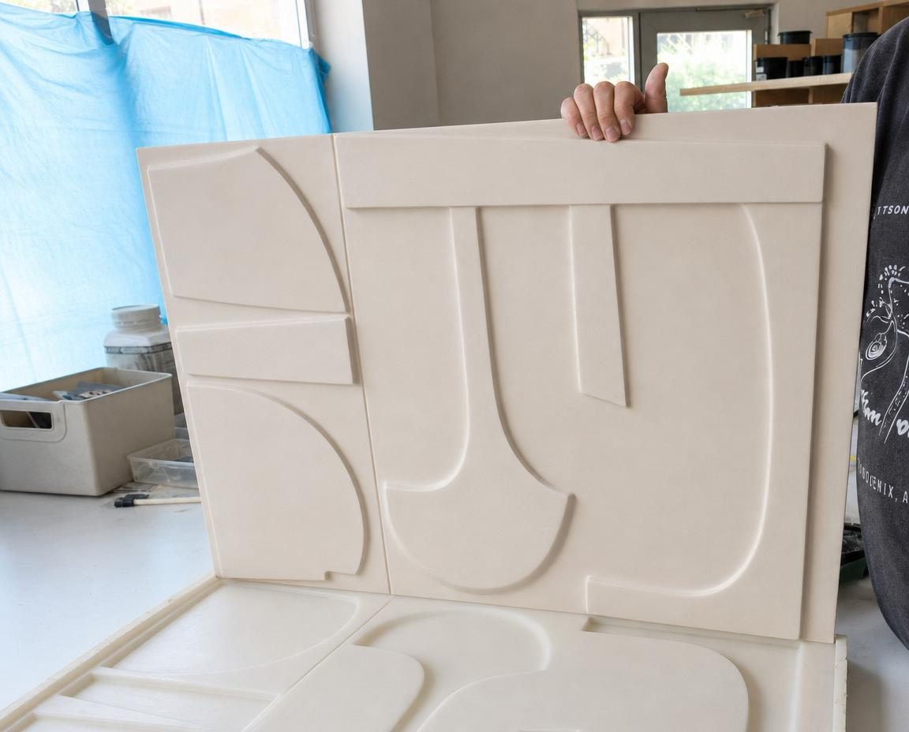
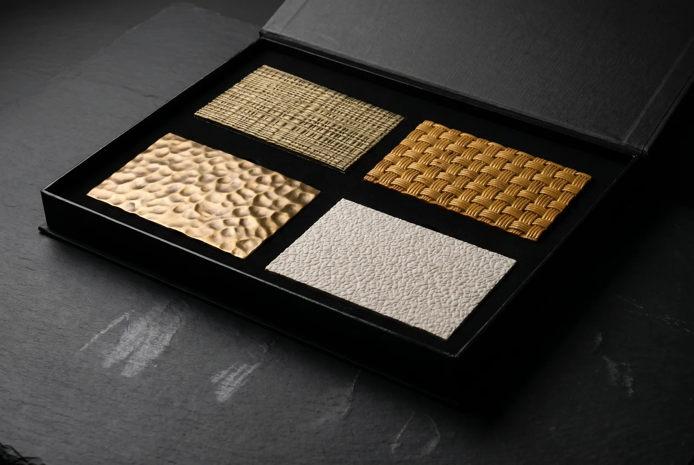

Your design.
Cast as drawn.
A sketch, a dimensioned drawing or a reference image comes into our Sapanca workshop and leaves as cast relief. We model it in 3D, make a mould master (3D-printed or CNC-machined, depending on the geometry), take a silicone mould off the master and cast the panel in Lumina PMAG™.

The values that go in your spec.
General product data. Project-specific values go into the project’s technical data sheet.
Project
- Composition
- Polymer-modified composite gypsum, over 95% mineral by mass
- Finish
- Artisan finishes
- Documents
- Technical data sheet and installation drawing for every project
- Delivery terms
- EXW Sapanca by default
- Installation
- Quoted separately, per project
The surface you approve is the surface we cast.
- 01
Drawing
We turn your drawing into a 3D relief model. Changes at this stage are made on screen, so they cost nothing in moulds or material.
- 02
Approval under raking light
Before casting, we render the model under low-angle raking light and send you the images. Nothing is cast until you approve them.
- 03
Master approval
We make the master from the approved model and put it to you for approval before the mould is taken.
- 04
Documents
A technical data sheet and an installation drawing, prepared for the project. We agree the specification clauses with your office.
One master, one material.
The relief is held in one digital master. The same motif runs from wall panel to column wrap, all cast in Lumina PMAG™. Because the silicone mould flexes, it releases undercuts in the master that a rigid mould would lock in.
Lumina PMAG™
Wall and ceiling panels, bulkheads and soffits, column wraps, counter and desk fronts, accent surfaces and corridor surfaces. Offcuts go back into new batches.
Artisan finishes
- Paint-ready
- The panel leaves the workshop primed; colour and sheen follow the project’s own paint specification and are applied on site.
- Deep matte
- Keeps the panel’s raw, as-cast texture. For galleries, residential interiors and low-traffic dry corridors.
- Performance matte
- For high-traffic public areas: hotel lobbies, corridors and lounges.
- Splash-resistant
- For splash zones: F&B servery walls and washroom walls. Not for areas that stay wet, such as showers and spa wet zones.
Every stage under one roof.
From mould master to artisan finish, every stage happens in our Sapanca workshop.
- 01Mould masters, 3D-printed or CNC-machined
- 02Silicone mould making
- 03Hand casting in silicone moulds
- 04Artisan finishes
Judge the surface in your own light.
Cast samples in Lumina PMAG™, with artisan finishes applied. Check the relief, the surface and the colour under your own lighting rather than on a screen.
Request a Sample Box